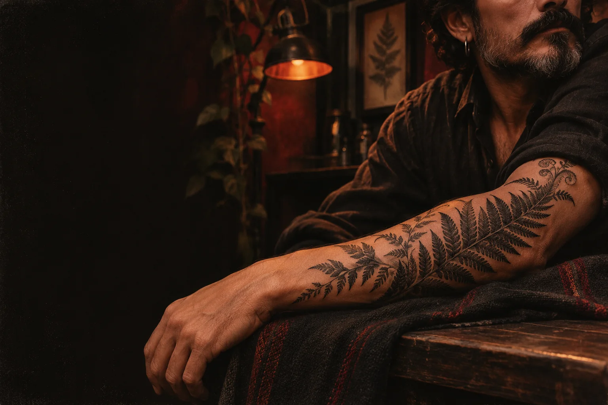

Alma Ríos
Línea fina
Composiciones ligeras con detalles botánicos y líneas geométricas que siguen la anatomía.
Estudio de tatuaje
Tres artistas, tres maneras de dibujar sobre la piel. Explora sus piezas y arma la referencia para tu próximo tatuaje.

Abre una foto para ver el trazo de cerca. Guarda las piezas que quieras tener a la mano.
Escoge según el tipo de trazo que imaginas para tu pieza.
Línea fina
Composiciones ligeras con detalles botánicos y líneas geométricas que siguen la anatomía.
Blackwork
Masas de tinta, geometría y espacio negativo, desde emblemas pequeños hasta piezas amplias.
Ornamental
Motivos simétricos de aire modernista, con curvas y detalles inspirados en joyería.
Combina una referencia con el tamaño y la zona que tienes en mente. La solicitud es de prueba.